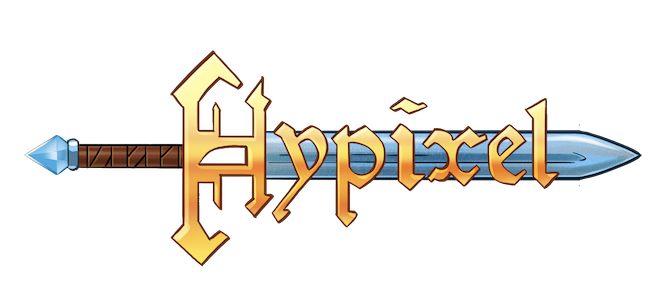

Leveldesign
Dit heb ik geleerd door mijn vakantiejob. Ik speelde graag het spel Minecraft met vrienden en begon dingen te bouwen. Na veel oefenen en spelen werd ik gevraagd door een vrij grote youtuber een map voor hem te ontwerpen. Dit heb ik dan gedaan met een heleboel vrienden samen en hij heeft deze dan ook gespeeld, dit is de bekendste scene ervan die door miljoenen mensen bekeken is. Alles wat in deze scene te zien is is door mij ontworpen. Hierna werden we gevraagd door een andere Youtuber om een lobby voor hem te ontwerpen. Dit hebben we gedaan en dat was het begin van mijn 'carriere' in leveldesign. Toen het zomer werd en de server vrij succesvol werd nam hij enkelen van ons in dienst om meer mappen te maken die zouden gespeeld worden in de vorm van minigames. We werden per map betaald en het werd zo berekend dat we ongeveer evenveel verdiende als bij elke andere vakantiejob. De server bleef groeien en naam kregen tot er aan het einde van de zomer ongeveer 3 miljoen mensen op hadden gespeeld. We waren in contact gekomen met een leveldesigner van Ubisoft, die ons voorgesteld had enkele lessen over leveldesign te geven. Ongeveer 40 lesuren later konden we onszelf volwaardige leveldesigners noemen.
Grafisch ontwerpen
In de loop der jaren kom je natuurlijk in contact met Photoshop. Ik besloot toen in rond de 14 jaar was het eens wat uitgebreid uit te proberen door tutorials enzo te volgen. Aangezien Photoshop niet gratis was begon ik met Paint.net, wat een gratis maar ook minder uitgebreid grafisch programma is. Na een aantal maanden oefenen stopte ik met alles wat ermee te maken had voor een aantal jaar.
Een aantal jaar later had ik weer nood aan photoshop voor thumbnails te maken voor video's. Ik haalde het programma en werkte er samen met een grafische designer in. Hij ontwierp de thumbnails, ik bewerkte ze door titels en episodenummers te veranderen. In de loop der tijd begon ik ook nood te krijgen aan bepaalde assets voor video's, zoals nummers die op het scherm popte, randjes voor facecams en gewone effecten zoals schrijfeffecten die uitgewerkt worden in photoshop en via videobewerking dan geanimeerd worden. Door deze nood begon ik in Photoshop te werken en dingen uit te testen, en opnieuw tutorials op te zoeken.
Als laatste heb ik ook nog 3d ontwerpen gedaan met Cinema4D, maar dit niet erg uitgebreid. Er staan enkele ontwerpen en renders in de portfolio sectie. Ik gebruikte vooral voorgemaakte assets en heb voornamelijk met licht gewerkt in 3d omgevingen die vanuit Minecraft omgezet waren. Sommige van de renders hadden zoveel lichtberekeningen dat de rendercomputer met 2 grafische kaarten 6+ uur nodig had.
Videobewerking

Door mijn vakantiejob als levelontwerper had ik een heleboel contacten gekregen, onderandere youtubers. Ik raakte bevriend met een vrij grote youtuber. Hij vroeg me om hem te helpen met een videoreeks van 5 video's. Niet als videobewerker maar als commentator. Ik stemde in en we kregen in totaal zo een 2 miljoen views op de reeks.
Een groot deel van de reacties vroegen of ik ook een youtubekanaal had. Dit had ik niet in die tijd dus maakte ik er 1 aan. Ik begon met het maken van video's en had een licentie van Sony Vegas Pro gekregen, met rendersettings voor mijn rendercomputer en een heleboel channel assets. Ik vond ook een artiest die thumbnails en assets voor video's wou maken. Dus ik begon met het opnemen van video's, tutorials te volgen en video's te bewerken. Ik heb uiteindelijk zo een 45.000 subscribers en 1 miljoen videoweergaven gekregen. Ook heb ik video's gemaakt voor Insomnia 2014. Dit heb ik gedaan van september 2013 tot oktober 2014. Voorlopig doe ik dit niet meer wegens tijdgebrek.
Programmeren
Ik had altijd al vrij veel interesse voor de onderliggende logica van computers en technologische apparaten. Toen ik 12 - 13 jaar oud was had ik er uitgebreid naar gezocht en had ik Java ontdekt. Ik begon de API te lezen en simpele codes te schrijven. Ook las ik code van andere mensen om elementen te wijzigen, of te kopiëren. Uiteindelijk dacht ik dat ik genoeg kennis had van Java en schreef enkele kleine programma's, een aantal kleine games en een aantal mods.
Toen heb ik Java een tijdje aan de kant laten liggen en gewoon niet meer geprogrammeerd. Toen ik begon te werken bij Hypixel had ik inzicht op de code en kreeg ik er weer interesse voor. Ik heb er niet veel mee gedaan behalve code bekeken en ervan geleerd. In het begin van mijn eerste jaar aan de Hogeschool Gent heb ik programmeren dan weer opgepakt als deel van het lessenpakket.